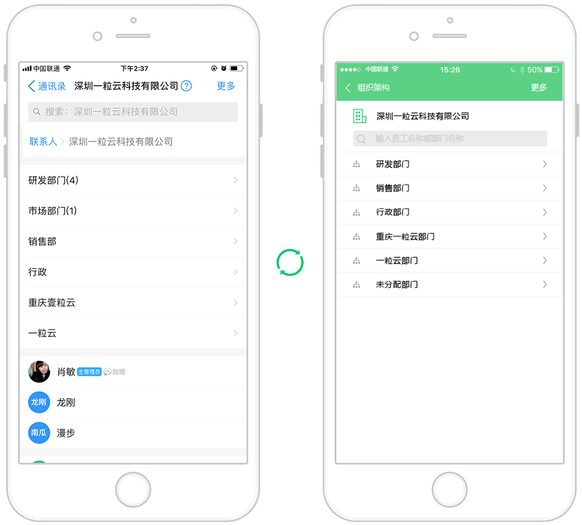

集成钉钉
免登
从钉钉直接登录一粒云盘,一键导入组织架构

同步组织架构
自动导入组织架构
用钉钉登录一粒云后，应自动导入之前再顶顶设置的组织架构，避免重复搭建工作，提高工作效率。


一个人多部门
同一员工可分配到多个部门
一名员工同属多个部门，不影响工作所在部门的权限和权力
从钉钉直接登录一粒云盘,一键导入组织架构
用钉钉登录一粒云后，应自动导入之前再顶顶设置的组织架构，避免重复搭建工作，提高工作效率。
一名员工同属多个部门，不影响工作所在部门的权限和权力